나폴레옹의 잠수함 노틸러스(Nautilus) 호 이야기
게시: 2018-05-31T06:00:00+09:00
지난 편에서는 나폴레옹이 불로뉴에 약 20만명의 '영국 방면군'과 약 1천여척의 대형 보트들로 구성된 상륙 함대를 집결시키는 모습을 보셨습니다. 이 소식은 공포심과 상상력이 빚어낸 기발한 형상의 각종 상륙함들과 하늘을 뒤덮으며 기구를 타고 날아올 프랑스군의 모습으로 영국 대중들에게 전달되었습니다. 심지어는 프랑스군이 영불 해협 밑에 지하 터널을 뚫고 있다는 이야기까지 나올 정도였습니다.
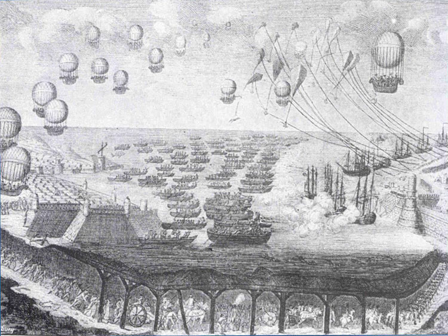
(바다를 통해, 하늘을 통해, 심지어 땅속을 통해 쳐들어오는 프랑스 군의 모습. '지나친 상상력은 국가 안보에 해롭습니다')
물론 영국 정부나 군 지휘관들은 이런 황당무계한 찌라시 기사들에 흔들리지 않았습니다만, 대중들이 공포에 질리고 있다는 사실 자체는 문제가 되었습니다. 사실 생각해보면 프랑스군의 영국 상륙 자체는 전혀 불가능한 일이 아니었습니다. 바다라는 것은 정말 예측이 불가능한 것이라서, 혹시 굉장한 폭풍이 2~3일간 지속되어 영국의 해협 함대가 뿔뿔이 흩어진 뒤, 재집결하기 전에 프랑스군이 잽싸게 항구에서 출동한다는 시나리오는 충분히 가능성이 있는 것이었습니다. 따라서 영국 정부도 프랑스군의 상륙에 대비한 준비를 시작합니다.
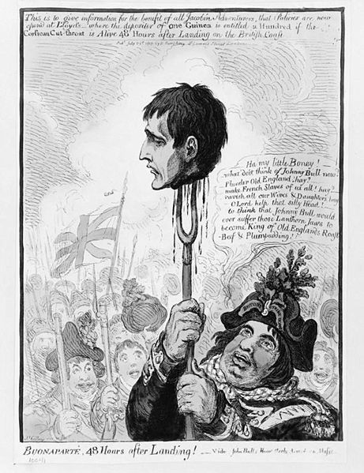
('상륙 후 48시간 후의 나폴레옹' 이라는 제목의 만화. 영국인들의 패기를 보여주는 그림이기는 합니다만, 현실은...)
가장 중요한 것은 역시 지상군 병력이었지요. 아미앵 평화 기간 당시 영국 정규 육군은 약 13만이었는데, 그중 영국 본토에 주둔한 것은 5만에 불과했습니다. 나머지는 모두 아일랜드, 캐나다, 자메이카, 말타, 이집트, 인도 등 해외에 주둔하고 있었습니다. 따라서 당장 병력을 늘릴 필요가 있었는데, 그것이 쉽지 않았습니다. 영국은 프랑스와는 달리 징집제가 아닌 모병제였거든요. 일단은 약 5만의 예비군과 추가로 약 5만의 민병대를 모집하였습니다. 예비군은 정규군과는 달리 해외가 아닌 본토에서만 복무한다는 조건이 딸려 있었는데도 모병이 쉽지 않아, 결국 제비뽑기로 반강제 징집해야 했습니다. 민병대의 경우는 평상시에는 생업에 종사하고 가끔씩 모여 훈련만 받는 것이었고, 또 복무 지역도 어디까지나 자기 동네로 국한되었는데도 모병은 신통치 않았고 역시 지역구별로 제비뽑기에 의해 징집해야 했습니다. 그나마 여기에 응하기 싫은 사람들은 벌금을 내거나 다른 사람을 대신 채워넣으면 실제 복무에서 면제가 되었지요.
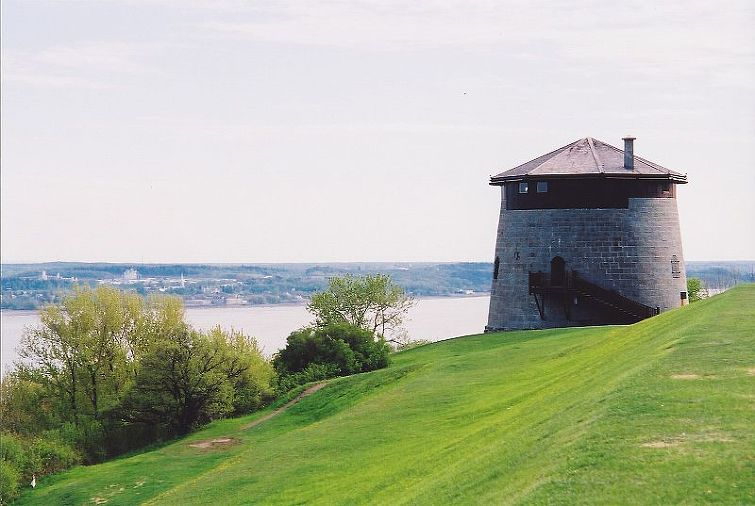
(이것은 등대가 아닙니다. 마르텔로 타워입니다.)
이런 한심한 군대로 나폴레옹의 정예군을 막을 수는 없었습니다. 게다가 영국은 영토가 좁아서 후퇴 후 내륙 깊숙이 적을 끌어들인 뒤 격멸한다는 전략을 쓸 수도 없었고, 또 왕궁이 있는 런던이 하필 영불 해협과 가까운 남동부에 위치해 있었으므로, 어떻게든 해안가에서 적을 최대한 막아야 한다는 강박증에 시달리고 있었습니다. 이때 나온 것이 마르텔로 포탑(Martello tower)이라는 소규모 요새였습니다. 원래 마르텔로 포탑이라는 것은 과거 지중해의 도시국가 제노바가 고안해낸 해안 방어 시설이었습니다. 지중해 전역에 방어해야 할 영토가 여기저기 방대하게 흩어져 있는 것에 비해 인구와 병력이 절대 부족했던 도시국가 제노바는 원통형의 작은 요새화된 포탑을 만들어 주요 해안가를 지켰습니다. 그러다가 영국 해군이 1794년 2월, 코르시카 섬을 공략할 때 모르텔라(Mortella)라는 곳에서 이 포탑과 교전을 벌이게 되었습니다. 당시 영국 해군은 74문 짜리 전열함 포티튜드 (HMS Fortitude) 호와 32문 짜리 프리깃 주노 (HMS Juno)를 동원하여 2시간 반 동안 격렬한 포격을 퍼부었으나, 이 작은 포탑은 전혀 꿈쩍도 하지 않았습니다. 오히려 이 포탑에서 쏘아대는 2문의 18파운드 포에게 포티튜드 호가 상당한 피해를 입었지요. 결국 영국 해군은 더 먼 곳에서 대포까지 끌고 상륙하여 이 탑의 취약점인 내륙 쪽에서 공격을 했습니다. 이 탑의 내륙 방면에는 고작 6파운드 포 1문만 달려있었거든요. 그러나 이틀 동안의 치열한 공격에도, 이 탑은 항복하지 않았습니다. 결국 지하에서 화재가 발생한 뒤에야 이 탑은 항복했는데, 그 전체 수비병력은 고작 33명이었고, 놀랍게도 그중 2명만 부상을 입었을 뿐 나머지는 멀쩡했습니다. 이 작고 견고한 포탑이 생각난 영국군은 1804년 9월부터 나폴레옹의 상륙군에 대비하여 이 포탑을 주요 해안 지대에 건설하기 시작했습니다. 다만 영국인들이 그 이름을 잘못 듣고와서는 원래 모르텔라(Mortella) 타워라고 불러야 할 것을 마르텔로(Martello) 타워라고 불렀다고 합니다. 물론 이 탑들이 그 위력을 발휘할 기회는 전혀 없었지요.
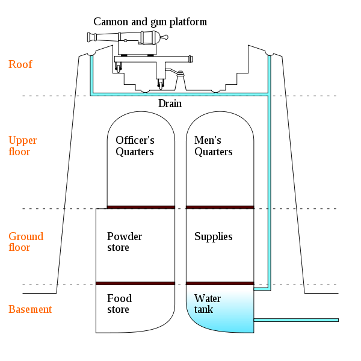
(마르텔로 타워의 구조)
하지만 이런 것들은 모두 소극적인 방어 준비에 불과했습니다. 전략적인 면에서 보면 방어자는 항상 공격자에 비해 불리했습니다. 공격자는 자기가 원하는 곳, 원하는 시간을 골라서 들이칠 수 있는 것에 비해, 방어자는 언제 어디를 공격당할지 알 수 없으니 항상 전전긍긍해야 했고, 또 부족한 병력을 분산시켜 놓을 수 밖에 없었기 때문입니다. 특히 1804년 8월, 나폴레옹이 레종 도뇌르 훈장을 수여하고 영국 방면군을 사열하기 위해 불로뉴를 방문했을 때, 영국은 드디어 나폴레옹이 영국에 상륙하려나 보다 하고 초긴장 상태에 들어가야 했습니다. 나폴레옹이 상륙함들을 테스트해보다 애꿎은 병사들 200여명을 괜히 물고기밥으로 만든 뒤, 조세핀을 만나러 떠난 뒤에도, 영국은 '이 상황에서 조세핀을 만나러 가다니, 이건 속임수다 ! 가는 척 하면서 다시 돌아와 영국에 상륙할 것이다' 라고 생각하여 오히려 더 긴장했다고 합니다.
이렇게 난리법석을 피운 뒤, 영국 해군에서도 '이건 아니다' 싶었는지, 소극적인 방어보다는 적극적인 공격에 나서기로 합니다. 즉, 아예 불로뉴에 쳐들어가서 프랑스 함대를 박살내자는 것이었지요. 하지만 어떻게 ? 불로뉴는 매우 좁은 입구를 가진 작은 항구여서, 대형 전열함을 무작정 밀어넣을 경우 괜히 본전도 못 찾을 것이 뻔했습니다. 원거리에서 폭발탄과 소이탄을 쏘아대는 것도 방법이겠으나, 그건 1802년에 이미 넬슨이 시도했다가 실패로 끝난 쓰라린 경험이 있었습니다. (나폴레옹, 불로뉴의 한가운데서 영국 침공을 외치다 참조) 이런 경우의 정석은 제한적인 상륙 작전이었습니다. 즉, 항구에서 조금 떨어진 지점에 포병을 동반한 병력 2~3천명을 상륙시켜, 재빨리 요지를 점령하고 항구 내의 적함들에게 포격을 퍼붓는 것이었지요. 하지만 이것도 실행 불가능이었습니다. 불로뉴 항구 바로 바깥 쪽에 무려 20만명의 프랑스 정예병들이 득실거리고 있었는데 어딜 상륙한단 말입니까 ?
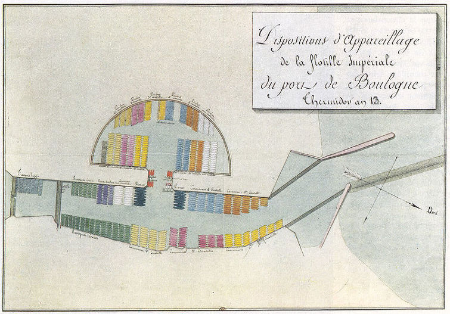
(당시 불로뉴 항구와 거기 모인 상륙용 보트들의 모습입니다. 입구가 너무 좁아서 바다로부터의 공격은 무척 어려웠지요.)
뭔가 다른 방법이 필요했습니다. 아이디어는 마구 쏟아져 나왔습니다. 가령 1588년 칼레(Calais)에서 스페인 무적함대를 실질적으로 괴멸시켰던 화공선(fireship)을 써서 공격하자는 안도 있었고, 불로뉴 항구의 입구가 좁다는 것에 착안하여, 프랑스 함대가 아예 기어나오지 못하도록 그 입구에 낡고 큰 배를 끌고가 침몰시켜 항구를 봉쇄하자는 안도 있었습니다. 그러나 1804년 7월 20일, 영국 수상 윌리엄 피트를 매료시킨 것은 프랑스로부터 건너온 한 미국인의 안이었습니다. 그 미국인이 바로 로버트 풀턴(Robert Fulton)이었지요.
(풀턴의 생김새는 뭐 그냥그냥...)
로버트 풀턴은 1765년 생으로서, 나폴레옹보다는 4살이 더 많았지요. 어릴 때부터 과학기구를 좋아하긴 했지만, 그의 첫 직업은 화가였습니다. 23살 때 영국으로 건너온 이후에도 화가로서 밥벌이를 하며 취미로 기계 공작이나 발명 실험 등을 했습니다. 그러다 영국에서 운하용 준설기에 대한 특허를 내면서 발명가로 전업을 하게 됩니다. 그러다 1797년 파리로 건너가 거기서 증기선을 연구합니다. 아마도 프랑스에서 그의 가장 빛나는 순간은 1803년 8월이었을 것 같습니다. 파리 주재 미국 대사였던 로버트 리빙스턴 (Robert R. Livingston)과 함께 증기선을 제작하던 그는, 드디어 증기선을 센느강에서 달리게 하는데 성공하여 오랜 꿈을 이루었던 것입니다. 하지만 이 길이 20m짜리 증기선은 시속 5~6km라는, 당시 범선과 별로 다를 바 없는 속도만을 보여준데다, 결정적으로 시험 도중 침몰하는 불운을 겪습니다.
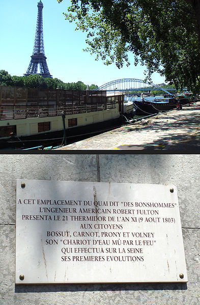
(파리 센느 강변에 있는 풀턴 기념비입니다. 여기서 1803년 8월 9일 풀턴의 증기선이 시험 운항을 한 곳이라는 표지이지요.)
하지만 풀턴은 기본적으로 무기 발명가였습니다. 그는 증기선 못지 않게, 기뢰와 잠수함 등 무기류의 발명에 열중했습니다. 기뢰와 잠수함은 사실 순수한 풀턴의 창작품은 아니었지요. 다들 아시다시피, 미국 독립 전쟁 때 실전에 투입되었던 터틀(Turtle) 호가 있었으니까요. 터틀 호는 미국 독립 전쟁 당시, 1776년 뉴욕 항에 정박한 영국 전함 이글 (HMS Eagle)호를 격침하려 했던 사건으로 유명했지요. 터틀 호는 계란처럼 생긴 1인승 잠수함으로서, 손으로 돌리는 스크루로 추진하는 방식이었습니다. 이 잠수함은 적함의 밑에 몰래 잠수해들어간 뒤, 역시 손으로 돌리는 송곳을 이용하여 배 바닥에 구멍을 뚫고 거기에 기뢰를 부착한 뒤 이탈, 그 기뢰가 시계에 의해 폭발하여 적함을 격침하는 방식이었습니다.
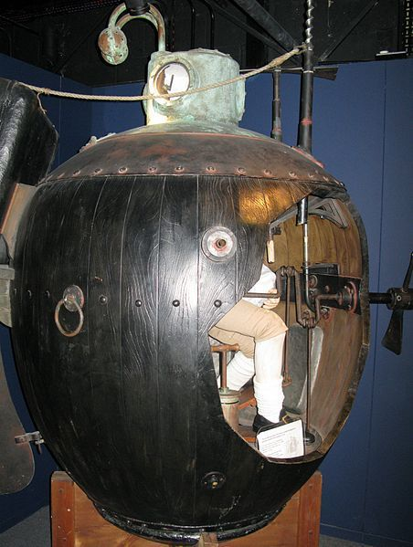
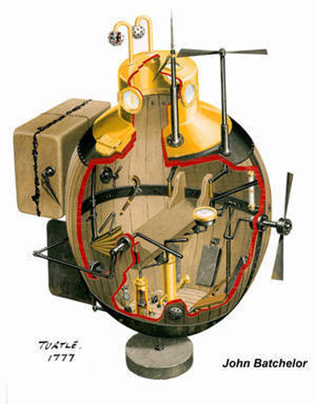
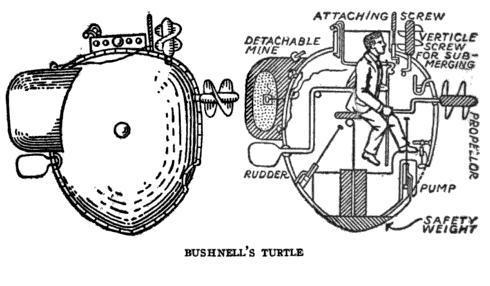
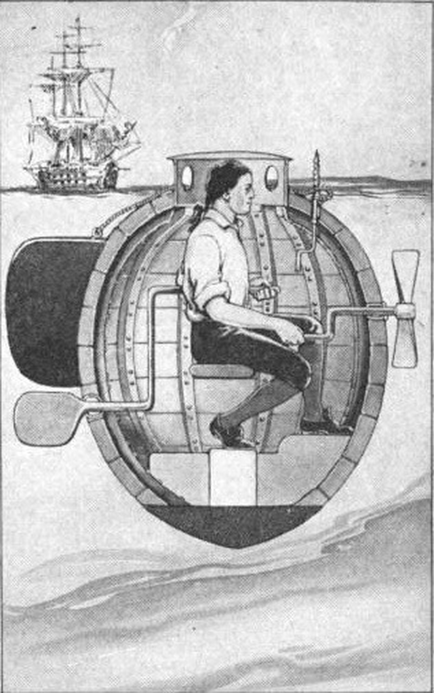
(터틀 호의 모습입니다. 완전 계란이네요 계란.)
당시 이 터틀 호를 조종했던 에즈라 리 (Ezra Lee) 중사에 의해 보고된 바에 따르면, 실제로 정박한 이글 호의 바닥에까지 접근하는데는 성공했으나, 당시 전함의 바닥에 덮혀 있던 구리판 때문인지 송곳을 아무리 돌려도 구멍이 뚫리지 않아, 2차례에 걸친 시도에도 불구하고 결국 기뢰 장착에는 실패했다고 합니다. 하지만 일부 주장에 따르면, 이건 다 조작된 이야기에 불과하고, 터틀 호는 제대로 항진할 수도 없는 실패작이었다고 합니다. 터틀 호가 잠수는 가능했을런지는 몰라도, 당시 뉴욕 항구의 물살을 손으로 돌리는 스크루로 헤치고 나가는 것 자체가 불가능했으며, 또 혹시 적함 밑으로 기어들어가 구멍을 뚫는다고 해도 물 속에서 어떻게 그 구멍에 폭탄을 매달겠냐는 의문이 제기되고 있습니다. 결정적으로, 터틀 호를 조종했던 에즈라 리 중사는 영국군의 추격으로부터 벗어나기 위해 기뢰를 흘려보냈고, 이 기뢰가 흘러가다 엄청난 폭음과 함께 폭발하여 굉장한 높이의 물기둥을 만들었다고 증언했는데, 당시 영국군 기록에는 아무도 이런 폭발을 목격한 바가 없었습니다. 당시 영국 해군의 기강으로 볼 때, 이런 사건이 실제로 있었다면 항해 일지에 반드시 기록이 되었어야 합니다.
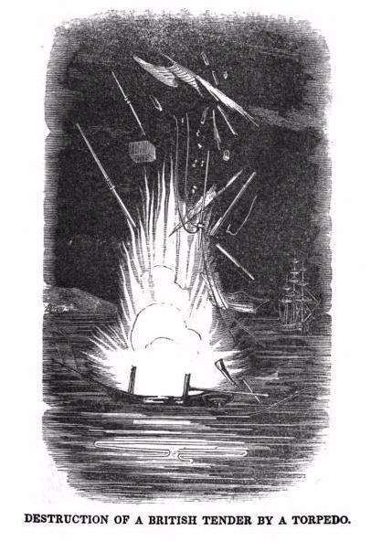
(1777년, 부쉬넬이 만든 부유 기뢰, 즉 torpedo는 영국 프리깃함 HMS Cerberus를 공격하였으나 그 옆에 정박해있던 소형 범선을 파괴하여 3명의 선원을 죽이는 전과(?)를 올렸습니다. 이건 그때를 묘사한 그림이지요. Tender라는 것은 어떤 배에 딸린 부속선을 말합니다. 또한 1778년에는 이 부유 기뢰를 델라웨어 강의 영국군을 공격하기 위해 흘려보냈는데, 그만 이게 뭔지 궁금했던 두명의 미국 소년을 죽이는 참변을 일으키기도 했습니다.)
아무튼 풀턴은 1797년 프랑스에서 세계 최초의 실용적 군용 잠수함을 설계하여 그것을 프랑스 총재 정부에 제안했습니다. 그 이름이 바로 노틸러스(Nautilus, 그리스어로 항해자라는 뜻) 호였는데, 나중에 쥘 베르느의 소설 '해저 2만리'에 나오는 잠수함을 포함하여, 여러 잠수함이 이 이름을 쓰게 되지요. 사실 이 노틸러스의 설계는 터틀 호의 기본 설계에서 따온 것이 분명했습니다. 바로 2년 전에 1795년에 터틀 호의 설계자였던 부쉬넬(David Bushnell)의 설계가 출판되었거든요. 그는 1797년 12월 제출한 제안서를 통해, 이 신무기를 '훌륭한 엔지니어'라고 알려진 보나파르트 장군과 협의하고 싶다는 희망을 명시했습니다.
그 제안서에서, 그는 이 발명의 목표가 영국 해군 격멸이라는 것을 분명히 했으며, 또한 제법 제대로 된 '죽음의 상인', 즉 국제적 무기 상인으로서의 소양을 잘 드러내 보였습니다. 즉, 이 잠수함의 건조 및 테스트 비용 마련을 위해 이미 노틸러스 사라는 회사를 따로 만들었으니 프랑스 정부는 증명이 안된 이 신무기에 개발 비용을 따로 들일 필요가 없다는 솔깃한 제안과 함께, 이 신무기로 인한 전과와 자신이 받게 될 금전적 보상을 명확히 연결하여 제시했던 것입니다. 가령 적함을 격침하는 경우, 해당 군함이 장비한 포 1문당 400 파운드를, 그것도 격침 후 6개월 안에, 반드시 지폐가 아닌 경화(specie, 즉 금화나 은화)로 지불할 것을 요구했습니다. 가령 74문짜리 전열함 1척을 격침하면 29,600 파운드, 즉 현재 가격으로 88억원을 받게 해달라는 것이었지요. 또 노틸러스 호가 적함을 나포하게 되면, 그 선박과 화물은 모두 노틸러스 사의 자산이 되도록 해달라고 했습니다. 특히 국제법적인 문제에도 신경을 써서, 노틸러스 호의 은밀한 전투 방식이 영국에서 비정규전으로 인식될 가능성이 있었으므로, 만약 노틸러스 호의 승무원이 영국군에게 생포될 경우 정규 포로 대우를 받지 못하는 사태에 대해서도 안전 장치를 두었습니다. 즉, 포로가 된 노틸러스 호의 승무원이 영국군으로부터 폭력이나 사형의 위협에 직면할 경우, 그에 대한 보복으로 영국군 포로에게 해당 위협의 4배에 해당하는 보복 행위를 해줄 것을 요청했습니다.
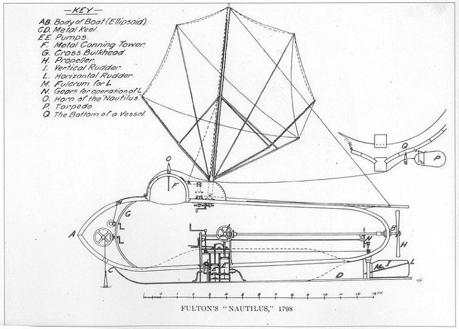
(노틸러스 호의 설계도입니다.)
그러나 요즘도 그렇듯이, 국제 무기 거래라는 것이 쉬운 일이 아니었습니다. 이 제안서는 프랑스 정부에 의해 보기 좋게 거절당했습니다. 일단 격침 보상액이 너무 크다는 것이 문제였습니다. 영국 해군의 경우 격침에 대해서는 head money라고 해서 적 수병의 머리수에 대해 약간 보상하는 것 외에는 별다른 보상이 없었습니다. 포상금은 오로지 적함을 나포하는 경우, 그것도 약간만 수리하면 영국 해군이 쓸 만한 상태로 나포하는 경우에 대해서만 나포 포상금을 주었지요. 당시 74문짜리 전열함 1척을 새로 만드는데 약 5만 파운드가 들었고, 적의 전열함을 나포하면 상태에 따라 약 2만에서 3만 파운드 정도만을 지불했던 것을 생각하면, 풀턴이 요구한 격침 포상금은 확실히 과다한 측면이 있었습니다. 프랑스 해군성에서는 처음에는 그 절반 가격만 지불하겠다고 제시했다가, 정작 총재 정부에서는 전체 제안을 거절해버렸습니다. 이런 전투 방식은 신사답지 못하다는 이유에서였습니다.
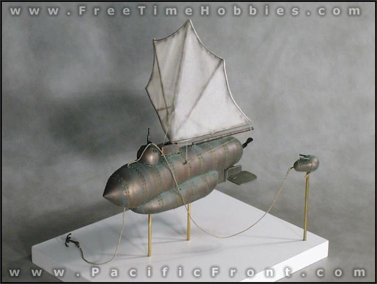
(노틸러스 호의 모형인데, 제법 진짜 잠수함 같지 않습니까 ?)
풀턴은 3차례의 제안서 끝에야 제작 및 테스트 허가를 받아 1800년에 노틸러스 호의 건조에 들어갔습니다. 노틸러스 호는 똑바로 선 계란형이었던 터틀 호와는 달리, 제법 현대적 잠수함처럼 길쭉한 원통형 모습을 하고 있었고, 역시 손으로 돌리는 스크루를 이용해 추진하게 되어있었습니다. 물 위에서는 마치 부채살 모양의 돛을 펴서 항진할 수도 있었지요. 노틸러스 호는 무쇠로 만든 골격에 구리판을 입혀 만든, 그러니까 금속제 잠수함으로서, 길이는 6.5m에 폭은 2m가 채 안되는, 3인승 잠수함이었지요. 특별히 눈여겨 볼 부분은 선체 좌우에 수평 안정타가 있었다는 것입니다. 풀턴은 이 수평 안정타의 각도를 조절하여 잠항 또는 부상시의 선체 각도를 조절하도록 설계를 했습니다. 이 부분은 현대적인 잠수함이 모두 채용하고 있는 것으로서, 확실히 풀턴의 설계가 과거 부쉬넬이 만든 터틀 호와는 차원이 달랐다는 것을 보여주고 있습니다.
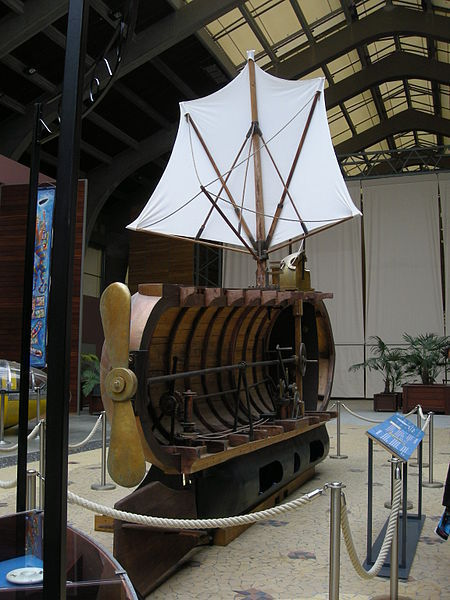
(노틸러스 호의 단면 모형입니다.)
또 기뢰(역시 torpedo라고 불렸습니다)의 부착 및 폭파 방식도 터틀 호의 애매모호한 방식과는 달랐습니다. 잠수함 외부에 긴 밧줄이 달린 기뢰를 달고 다니되, 이 밧줄은 바늘귀같은 구멍이 달린 못의 그 구멍을 통과해서 꿰인 상태로 잠수함에 달려 있었습니다. 잠수함이 적함 밑에 도착하면, 잠수함 상부의 돔(dome)에서 그 밧줄이 꿰인 구멍달린 못을 적함의 목제 선체에 박아넣고, 기뢰를 탈착시킨 뒤, 스크루를 돌려 적함에서 떨어져 나갔습니다. 즉, 잠수함은 기뢰가 끝에 달린 긴 밧줄을 끌고 가는 형국이었는데, 그 밧줄은 적함에 꽂힌 못의 구멍을 통과하게 되어 있었으므로, 잠수함이 적함에서 충분히 멀어지면, 기뢰가 적함에 결국 부딪히게 되어 있었습니다. 이 충격에 의해 기뢰 내부에 설치된 일종의 플린트락 머스켓의 발화 장치같은 점화 장치가 작동되어, 그 기뢰 속에 든 화약이 폭발하는 방식이었습니다.
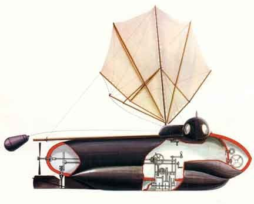
(노틸러스 호 뒤에 달린 저 기뢰 보이십니까 ?)
이런 구조의 노틸러스 호는 테스트에서 매우 좋은 결과를 냈습니다. 프랑스의 군항 르 아브르(Le Havre)의 내항에서 테스트해본 결과, 3명의 승무원과 촛불 한개를 태우고도 1.5m 깊이에서 1시간을 잠항하면서 아무런 불편함이 없었고, 스크루로 176m를 항진하는데 4분이 걸렸습니다. 또 기뢰 테스트도 성공적이어서, 프랑스 해군이 제공한 작은 12m 짜리 보트 하나를 폭파하는데도 성공했습니다. 이러한 테스트는 프랑스 지방 관리가 직접 목격하고 증언했으며, 풀턴이 줄을 댔던 당대의 과학자들이자 나폴레옹의 측근이었던 라플라스 (예, 라플라스 방정식의 그 라플라스 맞습니다) 및 몽쥬 (이집트에 따라갔던 바로 그 몽쥬 맞습니다)를 통해 나폴레옹에게도 보고가 되었습니다.
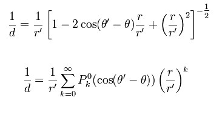
(한때 나폴레옹의 시험 감독관이었다가 나폴레옹의 신하가 된 라플라스입니다. 저런 어려운 공식을 만든 사람이니 학생들의 원수네요.)
마침내 1800년 12월, 라플라스와 몽쥬가 풀턴을 나폴레옹에게 소개했습니다. 나폴레옹은 풑턴과 그의 잠수함에 대해 별다른 깊은 인상을 받지 못했다고 합니다. 원래 나폴레옹은 기술적인 혁신에 대해서는 무척 회의적인 태도를 보였거든요. 그는 기존에 존재하는 기술을 잘 활용하는 현실적인 사람이었지 불확실한 신기술에 기대를 품는 스타일은 아니었습니다. 특히 이런 방식의 잠수함 공격은 잠수함 승무원들에게는 사실상 자살 공격이나 다름없는 것이라는 것을 나폴레옹과 그의 해군 각료들은 한눈에 꿰뚫어보았습니다. 이렇게 느린 잠수함이 적함에게 접근하기 위해서는 반드시 적함이 정박한 상태여야 했는데, 이는 적의 항구로 침투해야 한다는 것을 뜻했습니다. 하지만 땀을 뻘뻘 흘리며 스크루를 돌려도 고작 200m 움직이는데 5분 가량 걸린다면, 과연 적 항구에 침투할 수 있을지도 의심스러웠지만, 만약 성공한 뒤에라도 사실상 적에게 잡힐 수 밖에 없다는 뜻이었거든요. 인간은 기계가 아니니까, 200m 움직이는데 5분 걸린다고 1km 움직이는데 25분 걸리는 것은 아닐테니까요.
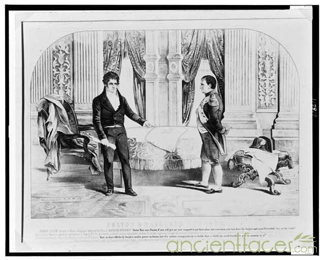
(나폴레옹과 풀턴의 만남. 또는 천재와 괴짜의 만남이라고도 할 수 있겠네요. 어느 쪽이 천재고 어느 쪽이 괴짜냐고요 ? 흠....)
나폴레옹으로부터는 아무런 약속을 받지 못했으나, 풀턴은 테스트를 계속했습니다. 좀더 개선된 노틸러스 호는 더 좋은 성능을 보여 잠항 깊이를 7~8m까지로 향상시켰습니다. 하지만 나폴레옹은 여전히 냉담했고, 특히 해군성 관리들이 이 잠수함을 검열했을 때, 우연인지 필연인지 잠수함에서 물이 새는 등 좋은 모습을 보이지 못했기 때문에, 결국 이 잠수함 제안은 1802년 최종적으로 거절당했습니다. 낙담한 풀턴은 노틸러스 호를 해체하고 주요 장치를 파괴했는데, 이유는 자신의 지적 재산권이 프랑스 측에 공짜로 넘어가는 것을 막고자 했던 것입니다.
이야기의 시점을 다시 1804년 7월 20일로 되돌리시지요. 프랑스 측의 냉대에 깊은 상처와 함께 재산상의 손실만을 입은 풀턴은 영국의 초정으로 영국 행을 택합니다. 특히 한푼의 비용도 지불하지 않았던 프랑스와는 달리, 영국 정부는 영국으로 여행하는 비용조로 800 파운드를 선지불했기 때문에, 풀턴으로서는 무척 끌렸을 것입니다. 800 파운드면 당시 왠만한 중산층의 4년치 소득으로서, 현재가치로는 약 2억원에 해당하는 거금이었거든요. 아무튼 이렇게 영국으로 편을 바꾼 풀턴은 불로뉴에 대한 공격안을 윌리엄 피트 수상에게 제출합니다. 그 안은 간단히 말해 화공선과 어뢰로 프랑스 함대를 공격하자는 것이었습니다.
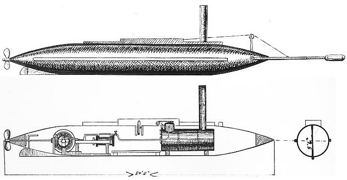
(torpedo라고 해서 이런 어뢰를 기대하면 곤란합니다. 당시에는 수중 기뢰를 다 torpedo라고 불렀습니다. 이 어뢰는 미국 남북전쟁 때 만들어진 것입니다.)
화공선은 전통적인 방식과 크게 다르지 않았습니다. 정해진 시간이 흐르면 시계에 의해 폭파되는 화약을 잔뜩 실은 배를 적 항구를 향해 흘러가도록 띄우자는 것이었지요. 독특한 것이라면 바로 어뢰(torpedo)였습니다. 이는 한마디로 자살 공격 어뢰정 같은 것이었습니다. 즉 납을 넣어 물 속에 반쯤 잠기게 만든 나무 화약통 2개를 엮어서 쌍동선 형태의 반잠수정을 만들고, 이를 한명의 선원이 노를 저어 움직이는 방식이었습니다. 이 선원은 검은 모자와 검은 옷으로 위장하고 야간에 노를 저어 적 항구에 침투한 뒤, 적함의 닻줄에 이 어뢰정을 묶어두고 시한 장치에서 핀을 제거하여 일정 시간 뒤에 폭발하도록 한 뒤, 재빨리 헤엄을 쳐서 탈출하는 방식이었습니다. 글쎄요, 이런 반잠수정이 과연 적의 초병에게 들키지 않고 적함에 접근할 수 있을지도 무척 의심스럽지만, 과연 인간이 헤임을 쳐서 몇 km를 탈출할 수 있을지도 무척 의심스럽습니다. 풀턴도 그 사실이 캥겼는지, 이 어뢰정 말고도 전에 노틸러스 호에서 쓰려고 고안했던 충격식 신관을 장치한 부유 기뢰(역시 torpedo라고 불렀습니다)를 잔뜩 만들어 조류에 떠내려 보낼 것을 제안했습니다. 피트 수상은 나폴레옹과는 달리 현실 감각이 다소 떨어졌는지, 이런 공격 방식을 채택하기로 하고 풀턴과 계약을 맺습니다.
(풀턴과 계약을 맺은 영국 수상 윌리엄 피트입니다.)
풑턴은 죽음의 상인답게, 역시 자신의 무기가 만들어내는 파괴에 대한 대가에 대해서도 꼼꼼한 제안과 협상을 하였습니다. 결국 협상된 조건은 이랬습니다. 일단 월급으로 200 파운드를 고정으로 받고 (위에서도 이야기했지만 이건 당시 중산층 신사의 1년치 연봉에 해당하는 거금이었습니다) 그 위에 성과급으로 파괴되는 적함 1척당 그 군함 가격의 1/4에 해당하는 돈을 받기로 했습니다. 물론 대상은 '갑판이 있는', 즉 보트는 안되고 최소한 슬룹함이나 브릭함 정도되는 군함이어야 했습니다. 74문짜리 전열함 신품 1척이 약 5만 파운드였으니, 1척당을 격침할 때마다 1만 파운드 정도를 받게 된 것이지요. 그러니까 결국 프랑스 해군성에서 수정 제시했던 그 금액으로 영국 해군과도 계약했던 것입니다. 다만 불로뉴에 집결해있다는 1천척의 군함들은 거의 대부분 '갑판이 없는' 대형 보트에 불과했으므로, 과연 이번 습격으로 풀턴이 어느 정도의 돈을 벌 수 있을지는 상당히 미지수였습니다.
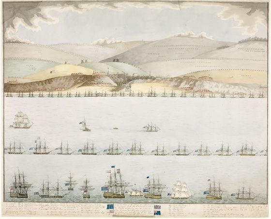
(영국 함대 쪽에서 바라본 1804년 불로뉴 습격 작전의 모습입니다. 저 멀리 프랑스 프리깃 함들의 모습이 보입니다.)
어쨌거나 1804년 8월 나폴레옹의 불로뉴 방문으로 인해 이 작전 계획은 서둘러 진행되었고, 마침내 10월 2일 밤, 작전이 개시됩니다. 이 불로뉴 습격 작전의 총지휘관은 키쓰 경 (George Elphinstone, 1st Viscount Keith)이었습니다. 그러나 키쓰 경은 전혀 전통스럽지도, 또 신사스럽지도 않은 이번 작전에 대해서 무척이나 회의적이었습니다. 그도 그럴 것이, 영국 해군은 전통과 신사연한 태도를 무척이나 중시했거든요. 어디서 굴러왔는지 모를 근본없는 양키의 말도 안되는 신무기로 무슨 전쟁을 한단 말인가 하는 것이 이번 작전에 임하는 영국 해군의 입장이었습니다. 그래서인지, 키쓰 경은 마치 작전이 실패하기를 바라는 사람처럼 굴었습니다. 즉, 이번 작전의 핵심은 은밀한 접근이었으므로, 한밤 중이 되어서야 항구에 접근해야 했는데도, 아직 해가 남은 상태에서 당당하게 함대를 몰고 불로뉴 앞에 진을 쳤습니다. 당연히 프랑스 측에서는 비상이 걸렸고, 평상시 불로뉴 외항을 지키던 프리깃함들을 모두 안쪽으로 끌어들이고, 대신 작은 함재정(pinnace)들을 내보내 초계선을 쳤습니다. 1802년 넬슨의 두번째 습격 때처럼 혹시 대형 보트들을 타고 쳐들어올 것에 대한 대비였지요. 그러다보니 일단 어뢰정들은 침투가 불가능했습니다. 또 화공선 공격도 별다른 전과를 올리지 못했습니다. 적의 초계 보트가 항구를 가로 막고 있었으므로 영국 선원들은 일찌감치 키를 고정시킨 뒤 화공선에서 탈출해야 했는데, 이렇게 돌진한 두 척의 화공선은 프랑스의 함재정 사이를 뚫고 프랑스 프리깃함들 근처에서 굉장한 불꽃과 폭음을 내며 폭발하여 장관을 이루었으나, 프리깃함들과의 거리가 멀어서 아무런 피해를 입히지 못했습니다. 한 척의 화공선에는 프랑스의 초계 보트가 달라 붙어 함을 수색하다 폭발하여 그 보트와 함께 프랑스 수병들을 몰살시켰습니다. 그러나 이것이 이날 밤의 유일한 성과였습니다. 함께 떠내려보낸 기뢰들도 아무런 성과를 내지 못했습니다.
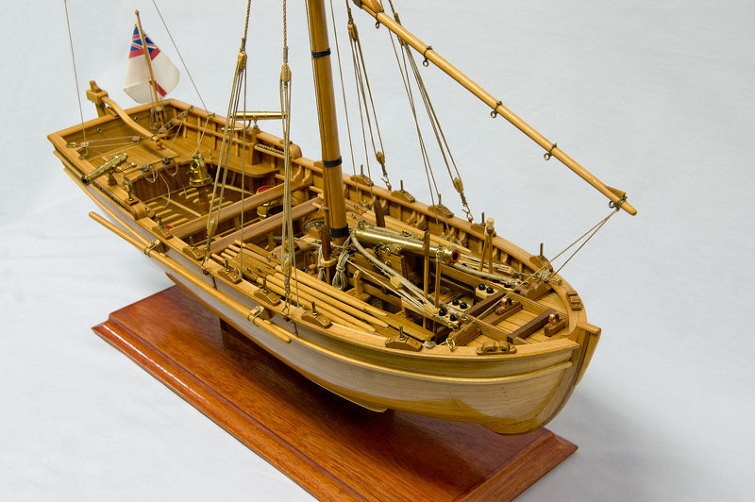
(Pinnace 피니스라는 것은 이런 소형 함재 보트를 말하는 것입니다만... 아무리 좋게 봐줘도 저게 갑판이 달린 군함으로는 보이지 않습니다 그려)
키쓰 경과 함께 전열함 모나크(HMS Monarch) 호에서 초조하게 결과를 기다리던 풑턴은 크게 실망할 수 밖에 없었습니다. 특히 은밀성이 중요했던 작전이 영국 해군의 비협조로 이렇게 망해버린 것에 대해 울분을 참을 길이 없었지요. 그 모습을 본 키쓰 경도 미안했던지 공식 보고서에는 이번 작전은 불운의 결과였고, 다음번 공격서는 상당한 전과가 예상된다고 희망적인 견해를 썼습니다. 결국 동원된 인원과 비용에 비해, 풀턴의 공격 방식은 너무나 비효율적이었던 것이지요. 다만 이번 작전을 통해서, 프랑스 측이 수세로 몰려 불로뉴 방어에 전전긍긍하게 된 것은 영국 측에 있어서 나름 큰 성과였다고 할 수 있었습니다.
이후에도 풀턴은 영국 정부에게 불로뉴에 대한 2차 공격을 제시하며 여러가지 개선안을 내놓았지만, 프랑스 측이 항구 입구에 쇠사슬과 활대 등으로 봉쇄선을 쳐놓아 이런 어뢰 공격이 크게 어려워졌고, 결국 1805년에 풍운아 시드니 스미스 경(아크레(Acre)의 3인방 참조)과 함께 감행한 불로뉴 2차 공격에서도 아무런 성과를 거두지 못했습니다. 특히 풀턴은 프랑스에서 만들던 노틸러스 호의 설계도를 영국에서 더욱 향상시켜, 이 잠수함으로 프랑스의 주요 군항들을 공격할 것을 제안했으나, 이 또한 1805년의 트라팔가 해전으로 모두 물거품이 되어 버립니다. 즉, 트라팔가 해전으로 바다를 완전히 제패한 영국 해군에게 잠수함 같은 물건은 필요없었던 것이지요.
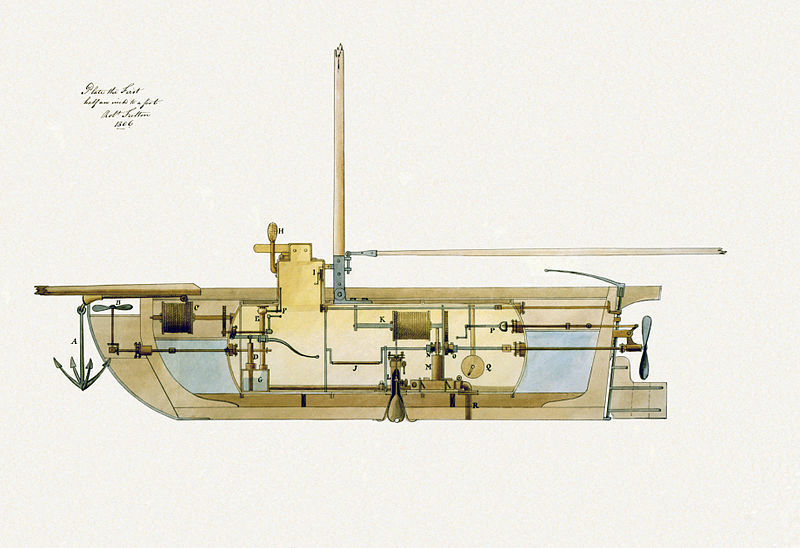
(영국을 위해 만든 새로운 노틸러스 호의 디자인입니다. 글쎄요... 모양 자체는 먼저번 프랑스 노틸러스보다 영 떨어지네요.)
결국 풀턴은 영국에서도 별다른 소득을 올리지 못하고 1806년 미국으로 되돌아갑니다. 그러나 그의 연구 활동은 마침내 미국에서 결실을 맺어, 로버트 풀턴이라는 이름을 우리나라를 비롯한 세계 곳곳의 교과서에까지 올리게 합니다. 바로 그가 미국에 돌아가서 만든 클레르몽(Clermont, 아마도 프랑스식으로 읽어야 할 듯) 호 덕분이지요. 1807년 8월 17일 허드슨 강을 달린 클레르몽 호는 세계 최초로 상업적으로 성공한 증기선으로 이름을 남겼거든요.
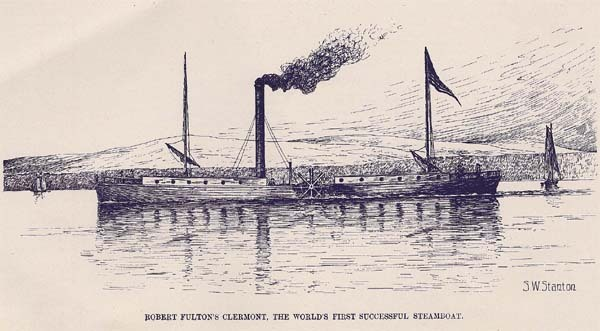
(풀턴에게 역사적인 영광을 안겨준 성공작, 클러몬트 또는 클레르몽 호입니다.)
하지만 역시 그는 천성이 죽음의 상인이었나 봅니다. 그는 1812년 영미 전쟁 때, 뉴욕 항구를 지킬 세계 최초의 증기엔진 군함인 데몰로거스 (Demologus, 나중에 Fulton으로 개명) 호를 설계했습니다. 다만 이 전쟁이 너무 빨리 끝나버려, 데몰로거스 호는 실전 기회가 전혀 없었지요. 이 데몰로거스 호는 1815년 2월에 풀턴이 허드슨 강에 빠진 친구를 구하기 위해 강물에 뛰어들었다가 폐렴에 걸려, 49세의 젊은 나이에 숨질 때까지도 미완성 상태였습니다. 미 해군에서는 데몰로거스 호의 이름을 풀턴 호로 개명하여, 풀턴의 업적을 기렸습니다.
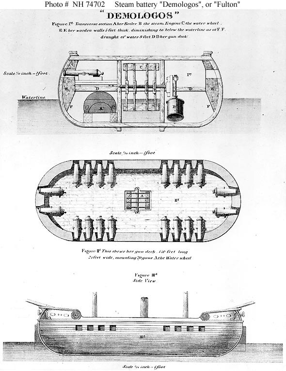
(데몰로거스 호의 모습입니다. 다만 이 배는 군함이라기보다는 항구를 지키는 '자력 항행이 가능한 부유 포대'라서, 앞에 USS라는 해군 군함 명칭을 얻지는 못했습니다.)